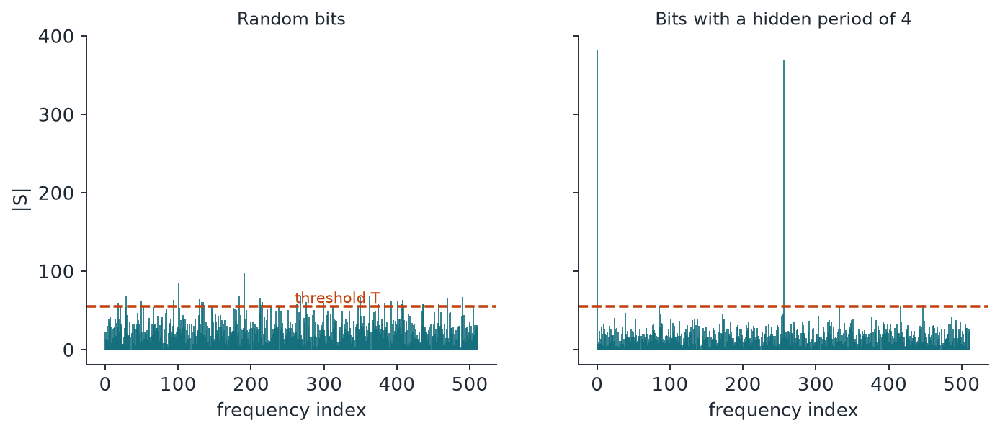

Chapter 3: NIST SP 800-22 (I): Balance, Runs and Spectra¶
NIST SP 800-22 is the best-known set of statistical tests for random and pseudo-random bit generators. It has fifteen tests, each of which turns a bit string into a p-value. This chapter covers the first six: the three counting tests (frequency, block frequency and runs), the longest-run test, the binary matrix rank test and the discrete Fourier transform test. They look at balance, local drift, oscillation, clustering, linear dependence between rows and hidden periodicity. The chapter after this one completes the suite.
3.1 The NIST SP 800-22 battery¶
Before we trust a random number generator, we want to know it has no obvious flaw. That is what the batteries in Chapters 3 to 8 are for: each one is a collection of experiments that good random data should survive, each tuned to catch a different kind of flaw. Keep one sentence in mind throughout. Passing means "no defect found", never "quantum". A well-built pseudorandom generator passes most of these batteries, so a pass cannot tell you where the numbers came from. We lean on Chapters 1 and 2 for p-values, the chi-square and normal distributions, and the functions erfc and igamc, and we will not explain those again.
This suite comes from the US National Institute of Standards and Technology (Rukhin and colleagues, revised by Bassham, April 2010). It was written to test random and pseudorandom bit generators for cryptographic use, and it has 15 tests. Most need sequences of about \(10^6\) bits: the document says its reference distributions assume lengths of order \(10^3\) to \(10^7\) bits. You run many sequences, with the sample size on the order of \(1/\alpha\), so at least 1000 sequences at \(\alpha = 0.001\). Each test gives a p-value per sequence, compared with a significance level \(\alpha\) that NIST recommends keeping between 0.001 and 0.01. The results are then read at a second level across all sequences, which has its own section at the end. The document itself warns that no finite set of tests can be called complete. The worked examples below use the document's own strings, and they are deliberately too short for the real tests.
3.2 Frequency (monobit) test¶
The idea in plain words. Toss a fair coin many times and you expect about half heads. This test counts ones and zeros and asks whether the gap between them is bigger than chance allows. NIST recommends running it first, because almost nothing else matters if it fails.
Example 3.2: Frequency (monobit) test
Take the string 1011010101. Turning ones into \(+1\) and zeros into \(-1\) and adding gives \(S_{10} = 2\), so \(s_{obs} = 2/\sqrt{10} = 0.632456\) and the p-value is 0.527089. The standard's 100-bit example gives \(S_{100} = -16\), \(s_{obs} = 1.6\) and p-value 0.109599.
The mathematics.
- \(\varepsilon_i\) is bit \(i\), and \(n\) is the number of bits (at least 100 is recommended).
- \(S_n\) is the running total of the \(\pm 1\) values.
- For large \(n\), \(s_{obs}\) follows a half normal distribution (a normal value with its sign dropped), which gives the erfc form.
What it catches and misses. It catches plain bias, such as a stuck or lopsided source. It knows nothing about order: 0101 0101 repeated forever has \(S_n = 0\) and scores a perfect p-value of 1.
3.3 Frequency test within a block¶
The idea in plain words. A coin could be fair overall yet run hot for a while and then cold. So we cut the sequence into blocks and check the share of ones in each, the way a teacher might check each class rather than just the school average.
Example 3.3: Frequency test within a block
With 0110011010 and block size \(M = 3\) we get blocks 011, 001, 101 and drop the final bit. The shares of ones are \(2/3\), \(1/3\), \(2/3\), so \(\chi^2 = 4 \cdot 3 \cdot (1/36 + 1/36 + 1/36) = 1\) and \(p = \mathrm{igamc}(3/2, 1/2) = 0.801252\).
The mathematics.
- \(M\) is the block length and \(N = \lfloor n/M \rfloor\) is the number of blocks.
- \(\pi_i\) is the share of ones in block \(i\).
- \(\chi^2\) follows a chi-square distribution with \(N\) degrees of freedom.
The document asks for \(M \ge 20\), \(M > 0.01n\) and \(N < 100\).
What it catches and misses. It catches local drift that cancels out overall, such as a long stretch of ones followed by a long stretch of zeros, which monobit would pass. It ignores the order inside each block.
3.4 Runs test¶
The idea in plain words. A run is an unbroken stretch of the same bit. A sequence can have the right number of ones yet flip too often (0101...) or too rarely (long slabs). Think of a walker's zigzag: this test counts the turns.
Example 3.4: Runs test
The string 1001101011 has \(\pi = 3/5\) and splits into 1, 00, 11, 0, 1, 0, 11, so \(V_{10} = 7\). The formula gives \(p = 0.147232\). The 100-bit example has \(\pi = 0.42\), \(V = 52\) and \(p = 0.500798\).
The mathematics.
- \(r(k) = 0\) if \(\varepsilon_k = \varepsilon_{k+1}\), and \(1\) otherwise.
- \(\pi\) is the proportion of ones.
- As a prerequisite, if \(\lvert \pi - 1/2 \rvert \ge 2/\sqrt{n}\) the test is not applicable and the p-value is set to 0.
What it catches and misses. It catches oscillation that is too fast or too slow. The standard's example is 100 ones, 73 zeros, 127 ones: only 3 runs where about 150 are expected. It looks only at the total number of runs, not at how they are arranged or how long each one is.
Try both tests on sequences of your own. Type bits, pick an example, or generate a sequence with a bias or a tendency to repeat the last bit, and read off the statistics and p-values. The last button repeats the experiment 200 times and draws the histogram of p-values.
3.5 Longest run of ones in a block¶
The idea in plain words. In a long string of coin tosses, the longest streak of heads has a predictable size. A generator that clusters its ones will produce streaks that are too long. We check the longest streak in each block, so one lucky streak cannot decide the result.
Example 3.5: Longest run of ones in a block
The 128-bit example with \(M = 8\) gives 16 blocks. Their longest runs are 2, 1, 2, 2, 3, 1, 2, 1, 2, 2, 1, 3, 2, 3, 2, 2, so the class counts are \(v = (4, 9, 3, 0)\). That gives \(\chi^2 = 4.882605\) and \(p = \mathrm{igamc}(3/2, 2.441303) = 0.180598\).
The mathematics.
- \(v_i\) counts the blocks whose longest run falls in class \(i\).
- \(N\) is the number of blocks and \(\pi_i\) is the class probability from the table.
| Minimum \(n\) | \(M\) | \(K\) | \(N\) | Longest-run classes | \(\pi_i\) |
|---|---|---|---|---|---|
| 128 | 8 | 3 | 16 | at most 1; 2; 3; at least 4 | 0.2148, 0.3672, 0.2305, 0.1875 |
| 6272 | 128 | 5 | 49 | at most 4; 5; 6; 7; 8; at least 9 | 0.1174, 0.2430, 0.2493, 0.1752, 0.1027, 0.1124 |
| 750,000 | \(10^4\) | 6 | 75 | at most 10; 11; 12; 13; 14; 15; at least 16 | 0.0882, 0.2092, 0.2483, 0.1933, 0.1208, 0.0675, 0.0727 |
What it catches and misses. It catches clusters of ones, and the document argues that testing ones is enough because an irregular run of ones implies irregular runs of zeros. It says little about structure that keeps streak lengths normal, such as a well-mixed linear generator.
3.6 Binary matrix rank test¶
The idea in plain words. Write the bits into a square grid. If some rows can be built by adding other rows together (with 1 + 1 = 0), the grid has low rank. Random grids almost never fall far below full rank, while some generators do so again and again. It is like checking whether a team's answers are genuinely independent or just copied combinations.
Example 3.6: Binary matrix rank test
The string 01011001001010101101 with \(M = Q = 3\) gives two grids, 010/110/010 with rank 2 and 010/101/011 with rank 3, and the last two bits are dropped. Using the standard's probabilities, \(\chi^2 = 0.596953\) and \(p = e^{-0.596953/2} = 0.741948\).
The mathematics.
- \(M\) and \(Q\) are rows and columns, both 32 in the suite, and \(N = \lfloor n/(MQ) \rfloor\) is the number of grids.
- \(F_M\) and \(F_{M-1}\) count the grids with full rank and with one less than full rank.
- \(p_r\) is the probability of rank \(r\), and rank is taken over \(GF(2)\), the two-element field: arithmetic on bits where 1 + 1 = 0.
The sequence needs at least \(38MQ\) bits, which is 38,912 bits at \(M = Q = 32\).
What it catches and misses. It catches linear dependence between successive words, as the document notes for shift-register generators built from fewer vectors than the matrix size. It cannot see linear structure spread over more than the grid holds: a recurrence with a state of many thousands of bits looks fine in 32 by 32 grids.
3.7 Discrete Fourier transform (spectral) test¶
The idea in plain words. A hidden rhythm in the data shows up as a tall spike in its frequency spectrum, just as a repeating note stands out when you analyse a sound. Under randomness, about 95 percent of the spectral peaks should stay below a known height. We count how many do.
Example 3.7: Discrete Fourier transform (spectral) test
Take 1001010011, so \(n = 10\). The threshold is \(T = \sqrt{10\ln 20} = 5.473\), and \(N_0 = 4.75\). The first five magnitudes are 0, 2, 4.472, 2, 4.472, all below \(T\), so \(N_1 = 5\). That gives \(d = 0.725476\) and \(p = 0.468160\). The document prints \(N_1 = 4\) and \(p = 0.029523\) for this example, and we could not reproduce that count from its own steps.
The mathematics.
- \(x_i = 2\varepsilon_i - 1\), and \(S\) is the discrete Fourier transform of \(x\).
- \(N_1\) is the number of the first \(n/2\) values of \(\lvert S \rvert\) that fall below \(T\).
- \(N_0\) is the number expected, and \(d\) is compared with a normal distribution.
At least 1000 bits are recommended.
What it catches and misses. It catches repeating patterns placed close together. It reads only one count (how many peaks clear a line), so a single huge peak barely moves the result, and structure that is not periodic goes unnoticed.

3.8 Summary¶
- SP 800-22 works on bit strings of about \(10^6\) bits, run over many sequences, with each p-value compared against \(\alpha\) between 0.001 and 0.01 and the results read again at a second level.
- Frequency catches plain bias and knows nothing about order. Block frequency catches local drift that cancels overall. Runs catches oscillation that is too fast or too slow.
- Longest run of ones in a block catches clustering. Binary matrix rank catches linear dependence between successive words, but only within the size of its grid. The spectral test catches hidden periodicity close to the sampling interval.
- Every test has a blind spot: the monobit test passes 0101..., the rank test cannot see a long recurrence, and the spectral test reads only one count of peaks.
3.9 Exercises¶
-
Apply the frequency (monobit) test to the 12-bit string 110111011010. Give \(S_n\), \(s_{obs}\) and the p-value.
Answer
There are 8 ones and 4 zeros, so \(S_{12}=8-4=4\) and \(s_{obs}=4/\sqrt{12}=1.1547\). Then \(p=\mathrm{erfc}(1.1547/\sqrt2)=0.248\). The string passes (as with all the worked examples, it is far too short for the test to be meaningful).
-
Apply the runs test to 1100011101. First check the prerequisite, then find \(V_n\) and the p-value.
Answer
The proportion of ones is \(\pi=6/10=0.6\). The prerequisite needs \(|\pi-1/2|<2/\sqrt n=0.632\), and \(0.1<0.632\), so the test applies. The runs are 11, 000, 111, 0, 1, so \(V_{10}=5\). Then \(p=\mathrm{erfc}\big(|5-2\cdot10\cdot0.6\cdot0.4|/(2\sqrt{20}\cdot0.6\cdot0.4)\big)=\mathrm{erfc}(0.0932)=0.895\).
-
Apply the frequency test within a block to 011010110010 with block size \(M=4\). Find \(\chi^2\) and \(p\).
Answer
The blocks are 0110, 1011 and 0010, with shares of ones 0.5, 0.75 and 0.25. So \(\chi^2=4M\sum(\pi_i-\tfrac12)^2=16\times(0+0.0625+0.0625)=2.0\), with \(N=3\) blocks. Then \(p=\mathrm{igamc}(3/2,1)=0.572\).
-
Why does the sequence 0101 repeated forever score a perfect p-value of 1 on the monobit test but fail the runs test?
Answer
Half of its bits are ones, so \(S_n=0\) and the monobit p-value is 1. But it alternates at every position, so it has the maximum possible number of runs, far more than the roughly \(n/2\) that a fair source gives. The runs test measures oscillation, so it fails the sequence.
-
A generator is a shift register whose state is many thousands of bits long. Explain why the binary matrix rank test with 32 by 32 grids is unlikely to catch it.
Answer
The rank test looks for linear dependence among at most 32 rows of 32 bits, which is a structure of up to 1024 bits. A recurrence whose state is many thousands of bits long spreads its dependence over far more bits than any grid holds, so every 32 by 32 grid looks like a random grid. Linear structure larger than the grid is invisible to this test.